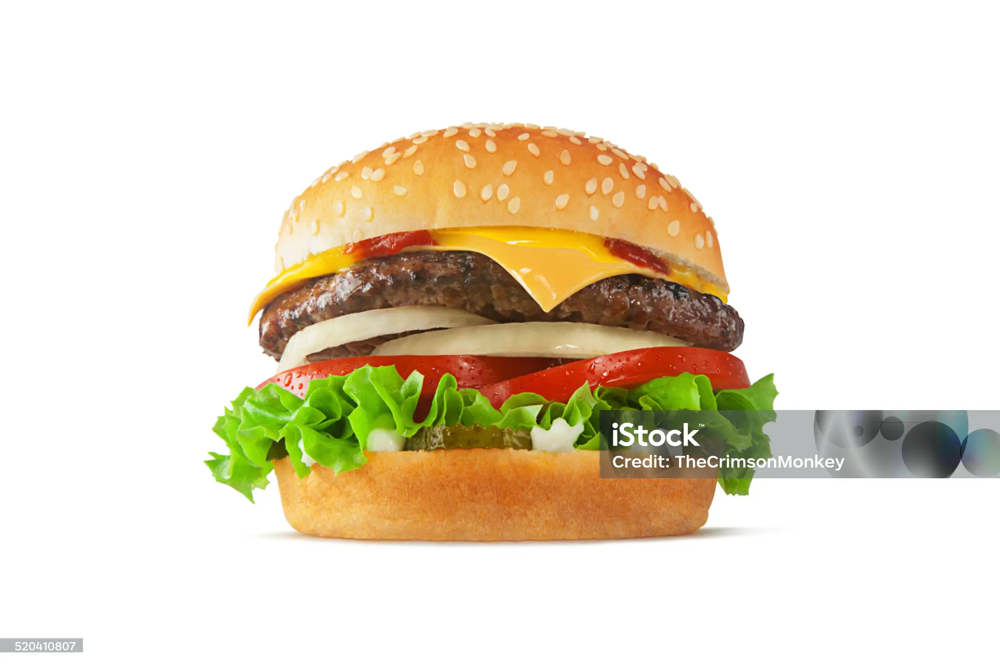

Burger
Recipe

Burger Sliders
These tasty burger sliders are easy to make with savory ground beef and shredded Cheddar cheese, baked in mini rolls until warm and gooey.
Ingredients:
- cooking spray
- 2 pounds ground beef
- 1 (1.25 ounce) envelope onion soup mix
- 2 cups shredded Cheddar cheese
- ½ cup mayonnaise
- 24 dinner rolls, split
- ½ cup sliced pickles (Optional)
Steps:
- Preheat oven to 175 degrees C. Cover a baking sheet with foil and grease
- Mix ground beef and onion soup together in a large skillet and cook over medium high heat until evenly browned
- Remove skillet from heat, stir in cheese and mayonnaise
- Place roll bottoms on baking sheet
- Bake in preheated oven until burger sliders are heated through
- Serve sliders and enjoy!